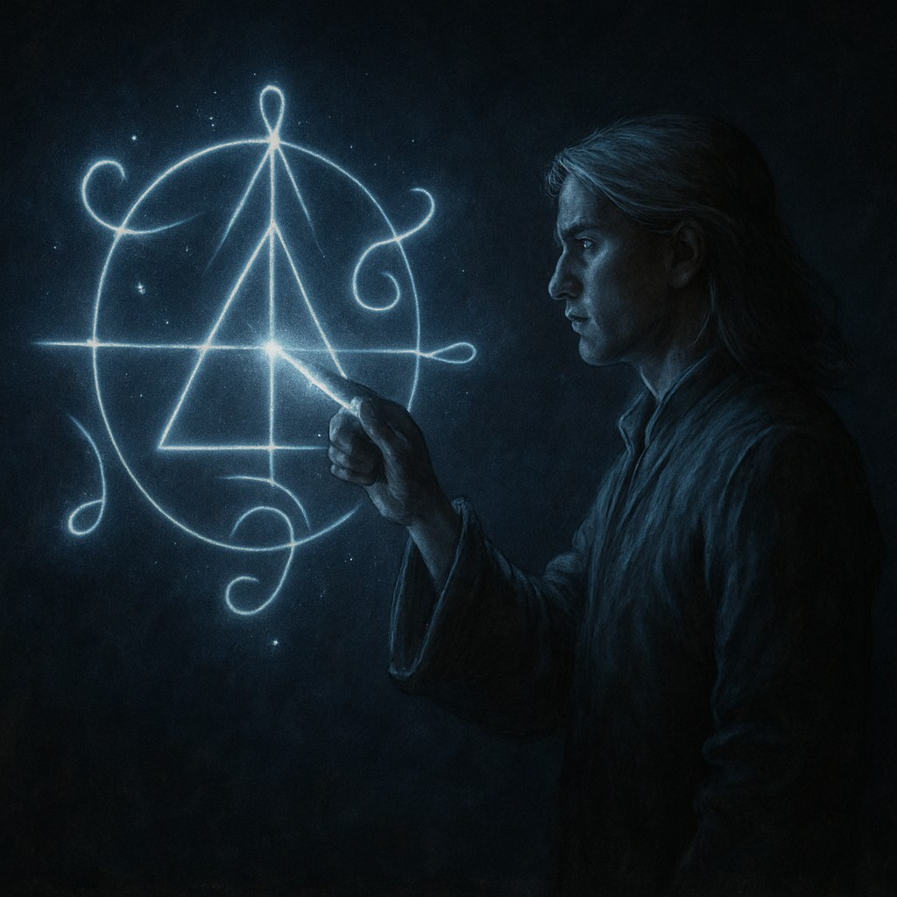
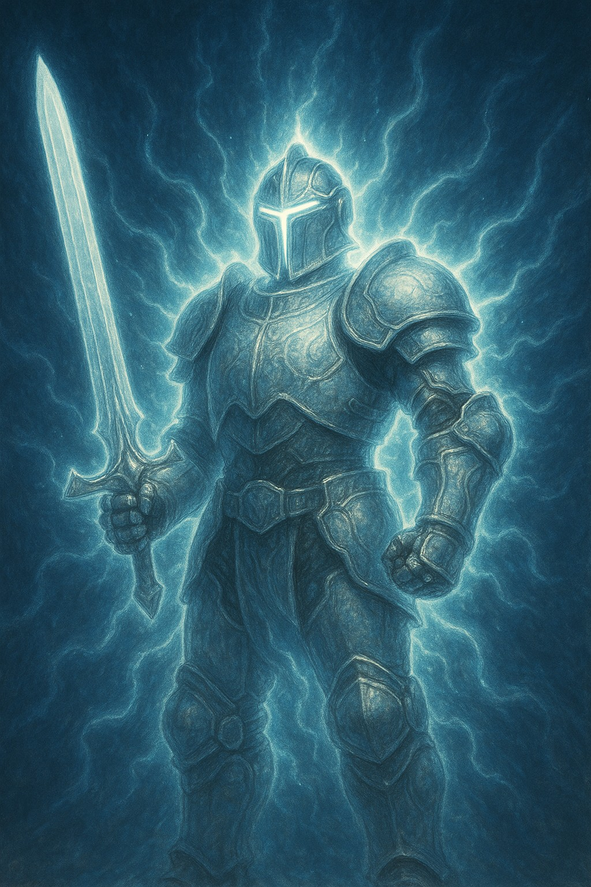

Other Magic Systems
Explore Investiture across the Cosmere.
AonDor (Elantris)
AonDor is powered by written glowing symbols called Aons. The magic is shaped by geography and the user's understanding of the symbols. It allows for a variety of effects, from healing to elemental manipulation.
Awakening (Warbreaker)
Awakening uses Breath and color to animate objects, grant abilities, and forge powerful Commands. This allows the awakener to bring inanimate objects to life, imbuing them with purpose and function.
Surgebinding (Stormlight Archive)
Surgebinders manipulate fundamental forces—like gravity and pressure—powered by Stormlight. Different orders of Knights Radiant have unique abilities tied to specific Surges, enabling feats such as flight, healing, and enhanced strength. Once bonded with a spren, Surgebinders can access these powers and grow stronger over time after swearing Ideals.